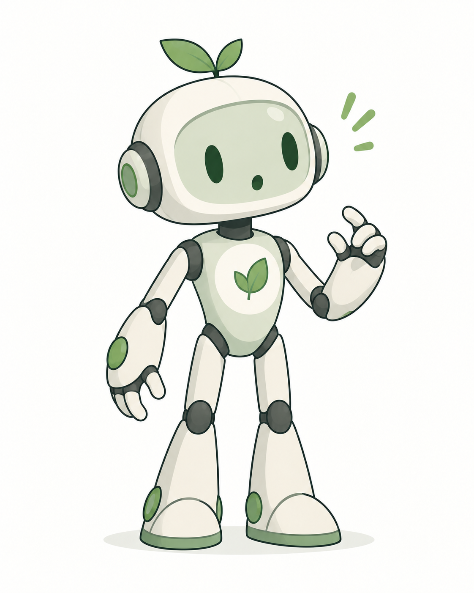

Welcome to DeepSprout
Hey, I'm Bimo!
I'll be your friend along the way. Let's discover your starting point and build a plan that fits you.
Skipping the introduction skips these two explanation screens only — not the four assessments.
Before we begin
Let's find your starting point.
We'll begin with a few questions and four short assessments.
Your answers and results are private by default. DeepSprout will use them to help build a plan around your goals.
There are no perfect answers. Just be yourself! You can take a break and continue later.
- About 15–20 minutesAn estimate for this preview. Real durations are confirmed once the assessments are measured.
- Progress is saved as you goClose the tab and come back — you return to the step you left.
- Private by defaultYour results are not shared with mentors or institutions.
Question 1 of 8
Quick personal setup
A few quick choices. Each one changes what your plan suggests — nothing here is a test.
Setup complete
Thanks — that helps a lot.
Next come the four short assessments. They measure different things, and each one is recorded separately. You can stop after any assessment and pick up where you left off.
Your progress is saved on this device.